Здесь представлены проекты по проектированию внутренних сервисов интернет-магазина МегаФон, которые направлены на ускорение time-to-market, решение рутинных бизнес-задач и оптимизацию ежедневных процессов: публикация, обработка, редактирование контента сайта интернет-магазина, управление заказами.
Админки, которые убрали из рутины сотрудников ожидание разработчиков и устаревшие программы. Контент-менеджеры теперь сами публикуют лендинги и меняют каталог, а модераторы обрабатывают отзывы в одном окне.
Продуктовый дизайнер. Вела проекты от анализа задачи до релиза: бенчмарк, исследования, сценарии, макеты, спецификации, дизайн-ревью
Пользователи
Сотрудники (менеджеры, модераторы)
Дизайн-система
Была
Платформа
Web Desktop
Проект 1Эргономика для модератора. Проектирование админки по модерации отзывов с сайта
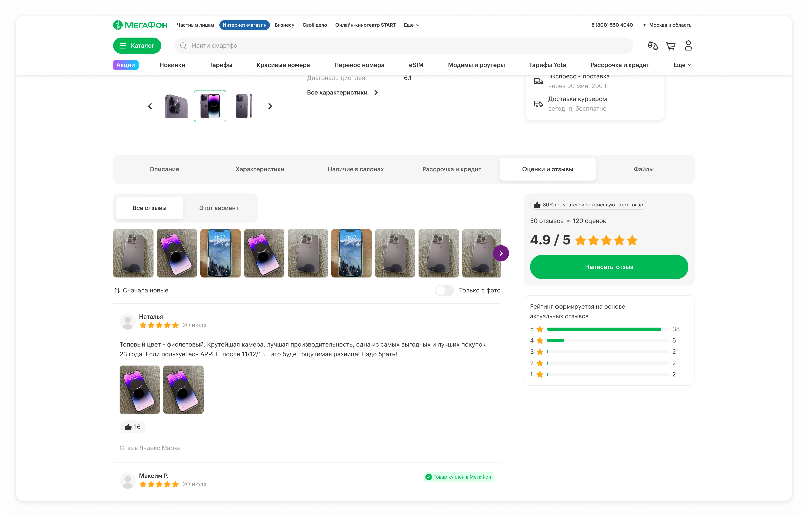
Отзывы в карточке товара на shop.megafon.ru
Контекст
Сейчас отзывы на сайте модерируются с помощью устаревшего ПО, которое не отвечает текущим потребностям как модератора, так и функциональности для пользователя сайта. ПО не гибкое и не масштабируемое
Боли модератора
Претензионные отзывы терялись среди обычных. На их обработку есть 2 дня, и срок легко было пропустить
Ручная модерация текста на наличие нецензурных слов. Усталость или невнимательность могли быть причиной ошибок
Ответы покупателям писал с нуля, хотя вопросы повторяются. ПО не имело функционала шаблонов. Модераторы хранили свои шаблоны в ворде каждый на своем компьютере
Каждый отзыв обрабатывал по одному — массовых действий не было
Боли пользователя сайта
Нельзя приложить фото или видео, а именно они лучше всего показывают товар. Соответственно и выбрать товар по фото нельзя
Отзыв или лайк мог оставить кто угодно с любого устройства — непонятно, можно ли верить отзывам
Отзывов мало, особенно на новые товары
Преследуемые бизнес-цели
Снизить затраты на модерацию за счёт ускорения обработки каждого отзыва
В долгосрочной перспективе — увеличение покупок и выручки. Так как хорошо развитый раздел отзывов: фото и видео к товарам, реальные отзывы от покупателей, большое кол-во отзывов — всё это создаёт доверие к интернет-магазину, мотивирует к покупкам на сайте
Задача
В административной панели (CMS) добавить раздел для модерации отзывов с функциональностью, которая расширит возможности пользователя по оставлению отзывов на сайте, а также упростит и ускорит процесс модерации отзыва для модератора
Discovery
Разобрала текущий процесс
Провела созвоны с модераторами (2) в формате прохождения сценария работы с отзывом. Выявила основные боли и трудности. Например, процесс работы с претензией был довольно трудоёмким: в самом ПО переслать или изменить статус на претензию нельзя; отправка претензии в другой отдел осуществлялась через рабочую почту, соответственно следить за сроками, запрашивать вовремя ответ и отвечать пользователю — всё это делает модератор без помощи системы. Здесь высок риск влияния человеческого фактора и ошибок
Бенчмарк
Изучила админки сервисов отзывов Aplaut, Revvy и др. Составила список фичей, которые будут полезны нашему сервису для закрытия вышеназванных болей и проблем: шаблоны ответов, статусы, автопроверку текста. Отказались с командой от подключения AI для написания шаблонов и автоматической модерации, потому что на данном этапе это сложно технически реализовать
Приоритизация требований
Приоритизировала требования вместе с продактом по принципу соотношения усилий/эффекту. В первый релиз вошли фильтры по статусу, быстрые действия с отзывом, возможность массовой модерации, история изменений. В следующий — пакетная загрузка, агрегация с других площадок
Гипотезы
Для модератора:
1.Если собрать в одной карточке отзыв, данные автора и быстрые действия, обработка одного отзыва займёт меньше времени. Проверим по среднему времени обработки
2.Если система сама подсветит стоп-слова, модератор реже пропустит нецензурный отзыв. Проверим по числу отзывов, снятых после публикации
3.Если у претензий будет отдельный статус, таймер и уведомления, просрочек станет меньше. Проверим по доле претензий, закрытых за 2 дня
Для покупателя:
4.Если показывать фото и видео в карусели, покупатель быстрее решится на покупку. Проверим по конверсии в корзину у товаров с фото-отзывами
5.Если писать отзывы и ставить лайки смогут только авторизованные пользователи, отзывам будут больше доверять. Риск: отзывов станет меньше. Проверим по числу отзывов в месяц
6.Если подтягивать отзывы с других площадок, у товаров станет больше отзывов. Проверим по среднему числу отзывов на товар
Дизайн-решение
1.
Страница со списком отзывов
Модератор видит все отзывы с автором, датой, оценкой и регионом. Фильтрует по статусу, оценке и дате, ищет конкретный отзыв. Одобряет или отклоняет сразу несколько отзывов. Отсюда же переходит к шаблонам ответов, пакетной загрузке и правилам проверки
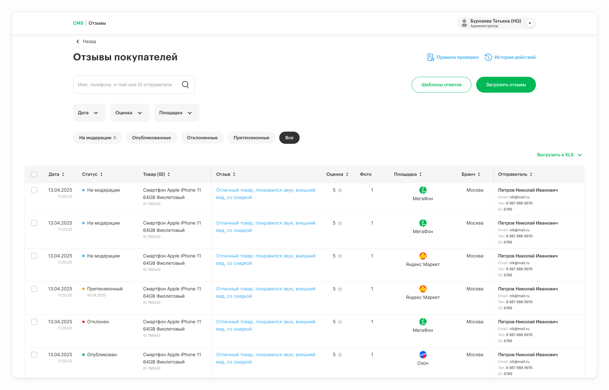
CMS. Раздел Отзывы — Стартовая страница
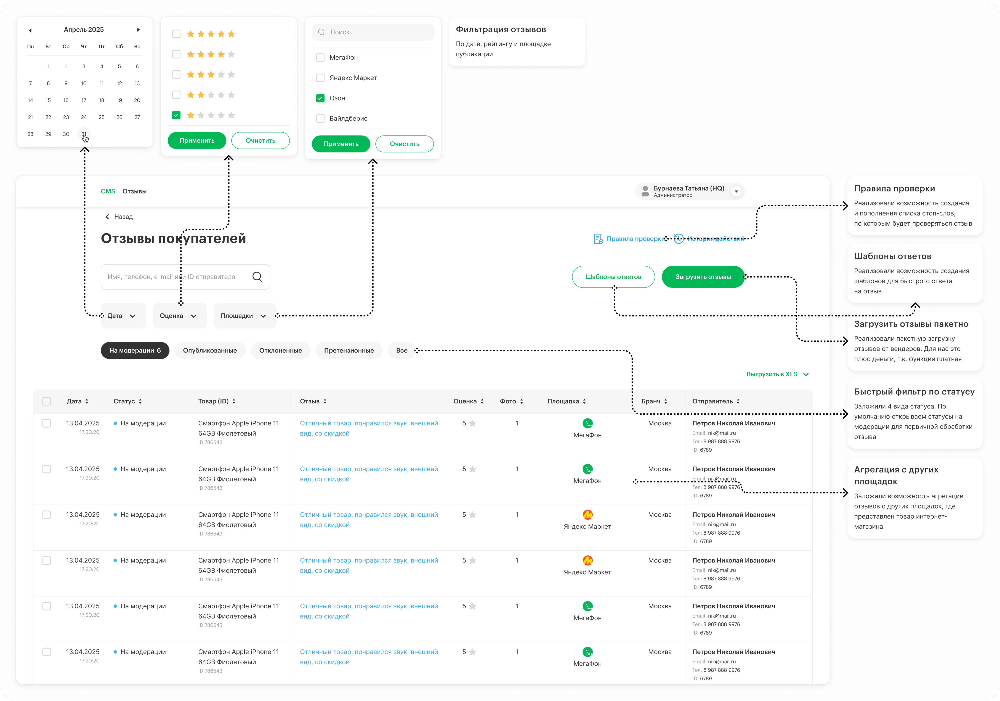
Описание функций на странице
2.
Детальная карточка отзыва
Здесь отзыв можно опубликовать на сайт, отклонить или перевести в претензию. Модератор видит информацию по отзыву и отправителю. Также можно перейти в режим редактирования, проверки отзыва и отправить ответ пользователю: написать самостоятельно или выбрать ответ из шаблона
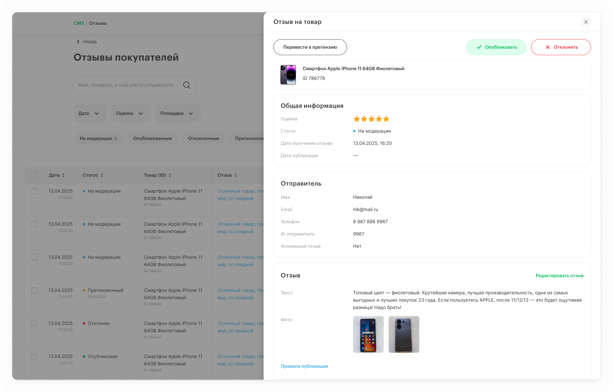
Детальная карточка отзыва
3.Действия с отзывом
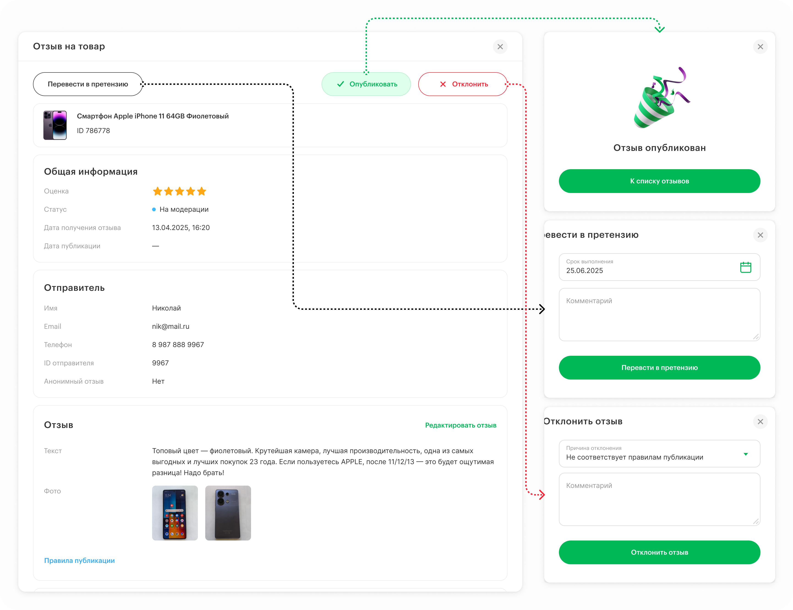
4.
Режим редактирования отзыва
Здесь модератор может вручную отредактировать текст отзыва, удалить фото. А также проверить текст на стоп-слова (нецензурные)
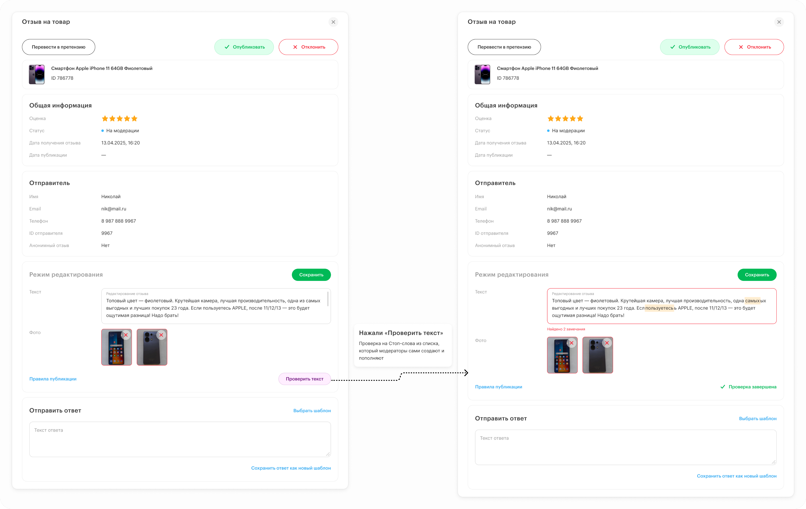
5.
Работа с претензионным отзывом
Отзыв, переведённый в статус Претензионный требует дополнительной работы (подготовки информации, коммуникации с клиентом и др.). У таких отзывов есть срок отработки SLA — 2 дня. Поэтому появляются нотификации с уведомлением
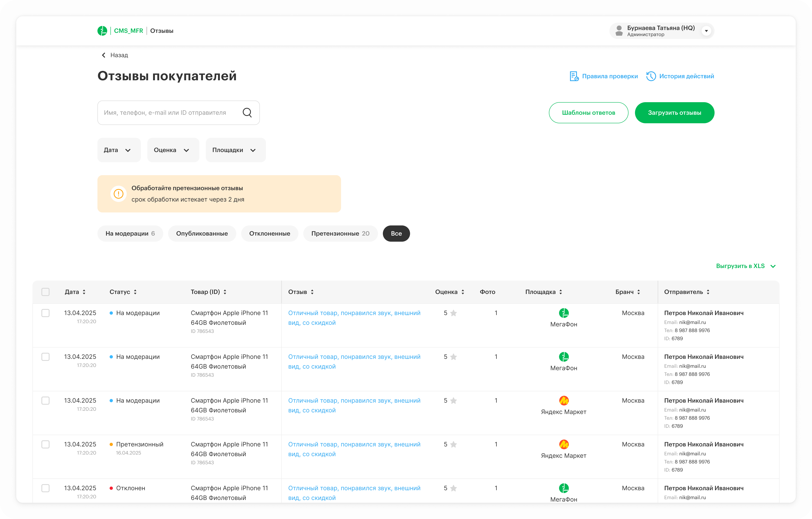
Пример нотификации
6.
Работа с претензионным отзывом в карточке
У такого отзыва можно продлить срок обработки. Также модератор может оставить отчёт о проделанной работе по претензии
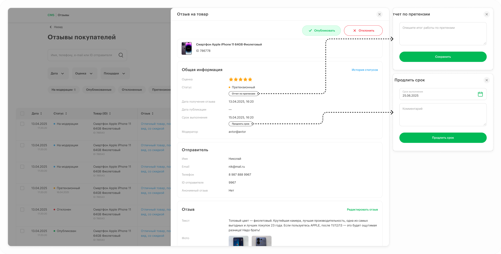
Действия с претензионным отзывом
7.
Отзыв на сайте
В рамках проектирования админки, отрисовала изменения раздела отзывов на сайте интернет-магазина добавили:
карусель с фото-видео, что приведёт к ускорению принятия решения по покупке
агрегацию отзывов (на интерфейсе показываем площадку публикации отзыва), что приведёт к увеличению кол-ва отзывов. Большее кол-во отзывов вызывает доверие к товару у пользователей
оставили возможность оставлять отзывы и лайки только для авторизованных пользователей. Данное решение повысит доверие к отзывам на сайте в целом
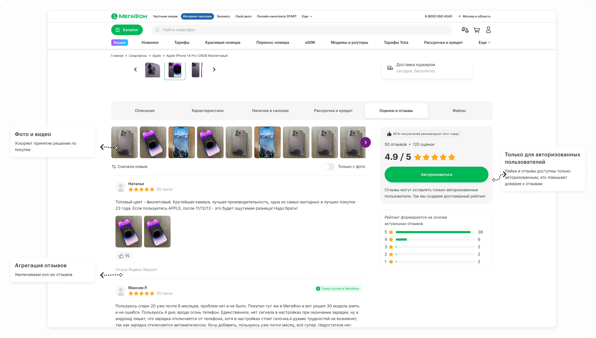
Раздел отзывов в карточке товара на сайте
Ожидаемые результаты (проект в разработке)
Снижение затрат на модерацию за счёт ускорения обработки отзыва
Снижение количества просроченных претензий
Увеличение показателя NPS модератора
Проект 2Конструктор лендингов. Промо-страница за пару часов вместо пары недель
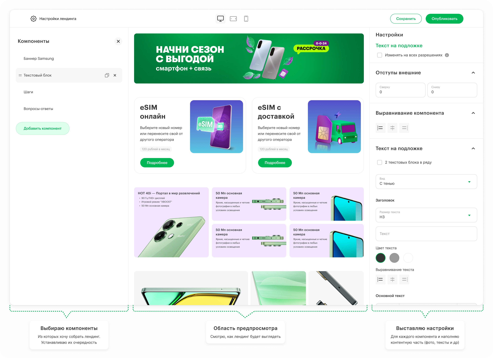
CMS. Раздел Конструктор лендингов — Стартовая страница
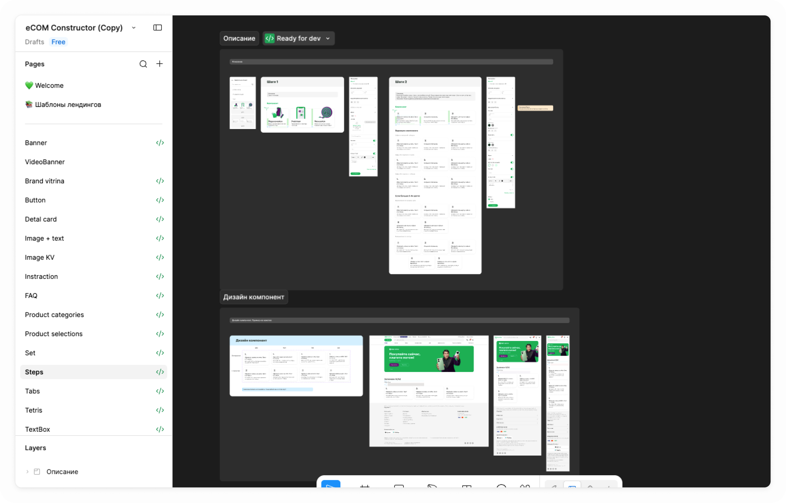
Библиотека компонентов со спецификациями для конструктора
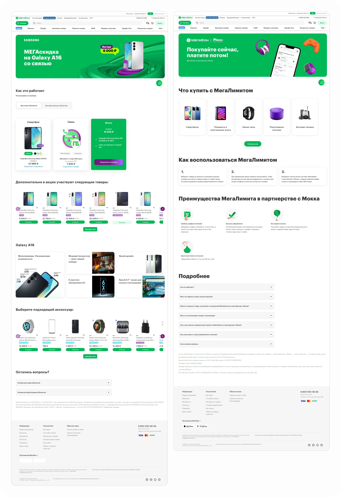
Примеры промо-страниц на проде, собранные на конструкторе
Проект 3Каталог и меню — переезд из десктопной программы в веб